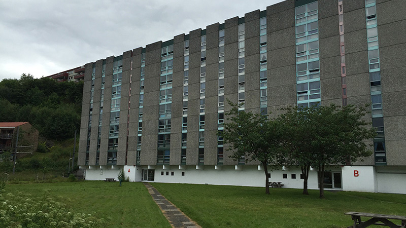

About the school
UIB
The University of Bergen is a well-known and respected school located in the heart of Bergen. There are approximately 1000 exchange students welcomed to the school every year, so you can become friends with people from all over the world. The University of Bergen offer courses taught in English within the fields of:
- Humanities
- Social Sciences
- Mathematics and Natural Sciences
- Psychology
- Medicine and Dentistry
- Law
If this is the place for you, you can apply for a spring or autumn semester.
Mentor week
Mentor week is a seven days event too help new students to get to know the universety and the city. One of the main points is for the students to bond and find friends, the week consisting of tours, films, information, hanging out in the park with bbq, events and on. In the evening the students can choose between a non alcoholic event like quiz, film, games and so on. Or a theme party .
Tandem language learning
The University of Bergen offers a language exchange programme called Tandem available for all students studying at UiB. This is very good opportunity to practice foreign language and make new friend! You can get more info here.
Housing
There are several apartments that SIB offers, but to choose Fantoft is recommended.

Fantoft is the biggist international student hostel. Most of exchange students live here. It is near the bybanen station, and there are lots of events every week at Fantoft club!
You can get more info about housing here.
Apps
Studentbevis
This is a great app if you are a student who always misplace or forget to bring your wallet. The card/ app is a confirmation that you are a student in Norway and if you show it you will get a discount at places if they provide the servise (transport, food, clothes, SiB(training)).
Mattilbud
In Norway the food is expensive, on Mattilbud can you track were there are sales so you can get the cheapest food. On the app you click on the different stores to see if some of your favourite or nearest has something cheap to offer.
Skyss Travel
When using transportation in Bergen there are two useful apps to use. The first app is Skyss Travel, on this app you can get all the information you need about going from one place to another, including if you want to know how long it will take, if you need to switch bus and so on. You can download the app here:
Google Play and for
App Store.

Skyss Ticket
The next useful app is Skyss Ticket. On this app you can buy ticket with your phone where you can choose to pay with your phone or by using your card. You can download the app here:
Google Play and for
App Store.
VisBergen
Vis Bergen is not a app but nice to mention if you want free entrance, receive information about events, happenings and a discount on alcohol at some clubs. The way it works is that you registrer on their website, then you will get an SMS to show a bartender and they then give you a sticker to put on your card.
For Korean food
If you want to buy some ingredient for Korean food, you can go to the global food market near the bus station. Though it is quite expensive, you can buy almost every ingredient you want.
- Kimchi 500g : 65 kr
- Chilly pepper powder 500g : 65 kr
- Chilly pepper paste 500g : 58.9 kr
- Sesame oil 320mL : 98.9 kr
- Soy sauce 1L : 49 kr
- Sin-Ramen : 11.9 kr
- Onion Ring snack : 25 kr
What to pack
Clothes for hiking ★★★★★
Since hiking is one of the most beloved activities in Norway, you should be going to hike a lot with your friends. So it is important to pack good hiking shoes, clothes and backpack!
Water-wind proof and warm clothes ★★★★★
Bergen rains a lot! Don't forget to pack water proof jacket. Coat is not recommended. Also, if you are planning to go to northern lights hunting, prepare warm clothes including gloves, hat, muffler, boots.
Korean food ★★★
It would be better to bring some Korean food if you have space in your luggage, because it is expensive in Bergen.
Present from Korea ★★
For saying thank you to your foreign friends.
Other
Letter of acceptance. Electronic devices and charger. Lan cable. Mule for toilet. Heating packs for hiking. Electronic heating mat. Towels. Nail scissors!
Useful site
Here are some sites that is good to know!
Apply for buddy! You can make a nice Norwegian friend.
This site offers helpful introduction about studying in Bergen.
This blog has lots of information including about Bergen, UIB.